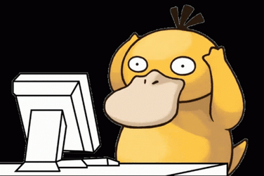

<ion-header [translucent]="true">
  <ion-toolbar>
    <ion-title>TDApp</ion-title>
  </ion-toolbar>
</ion-header>

<ion-content [fullscreen]="true">
  <ion-grid class="ion-no-padding">
    <ion-text>
      <h1>404</h1>
      <h2>Not Found</h2>
    </ion-text>
    <div id="boton"></div>
    <ion-text>
      <p>Lo sentimos, la página que buscas no existe o no tienes permiso para acceder a ella.</p>
    </ion-text>
    <div id="boton"><ion-button routerLink="/landing">Regresar</ion-button></div>
    
  </ion-grid>
</ion-content>
